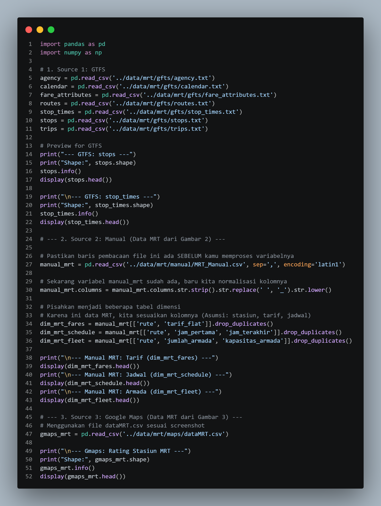

Akhirnya bisa membagikan sedikit sneak peek dari project Di Mata Kuliah Datawarehouse saya yang sedang saya kerjakan! 🚀
Fitur integrasi peta dan pencarian rute ini cukup menantang, tapi sangat seru saat berhasil diimplementasikan. Geser gambar di bawah untuk melihat beberapa tampilan UI-nya! 👇 #Frontend #MobileDev #UIUX #Jakarta



Geser untuk melihat lebih banyak